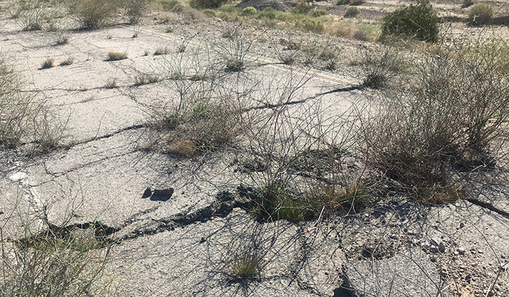
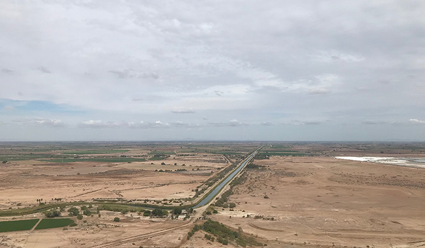
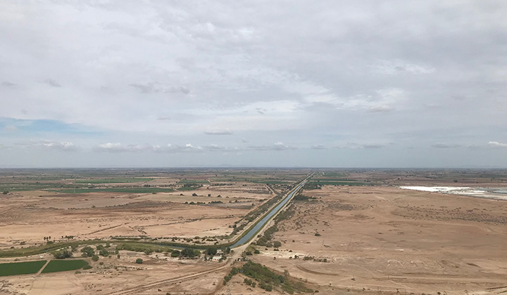
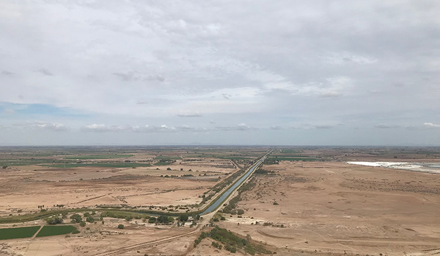

This page is under construction. I am actively involved in field work in southern California. Sometimes it's just purposeless hanging out for me. David carries GPS field work about twice a year and I generally would like to join! I use this platform to share some pictures and memories.
GPS survey at Mexicali (March 8-9, 2020)
We carry annual GPS survey at Mexicali to monitor the 2010 Baja earthquake post-seismic deformation.


 



R/V Sally Ride at Fieberling seamont chains (Jan 13-23, 2020)
This was my first cruise experience. R/V Sally Ride is a medium size modern research vessle that can hold 20 crew and 25 scientists. UCSD has a fascinating ship funds program that every student, stuff and faculty member can apply and there is an opportunity to get funded to perform a ~10 day cruise survery. The ferbieling survey was offered as a class. 20ish Scripps peeps (me included) and two faculty adults joined it. It was a enjoyable trip and also a great chance to build friendship -- we floated, shaked, got sea sickness, ate, slept, worked together on the boat. Sarah M. and Carrie M. were the two chief student scientists. They showed leadship, calmness, encouragement and positive altitude all the time. Tricia L. was my roommate and she showed tremendous patience in front of heavy repeated workload. It was amazing to work with them. Food was fabulous, so were snacks. Couldn't imagine that I can enjoy American food for ten days, yet I did. I learned that a toilet is called a "head"; ginger tea is amazing in curing sea sickness; sea water is really salty. I also experienced a lot of first times: first time to draw and shrank cups with CDT cast; first time to cut rocks; first time to see bioilluminium (bonus at the end of the trip); first time to filter water to get the microorganism. One more thing: I got lots of forehead acnes on the boat. Still didn't recover after four months :( But I definitely want to go back to sea.
GPS survey at Ridgecrest (Nov. 10-11, 2019)
I will never forget this field trip -- I was dehydrated. It was terrible. Anyone who is going to dessert please please drink lots of water and Gatorade. Thanks to David and Zhen for taking care of me.
GPS survey at Ridgecrest (Jul. 12, 2019)
Three major shocks (Mw7.1 maximum) striked Ridgecrest on July 4 and 5, 2019. It draw lots of attention as
GPS survey at Painted Canyon (Mar. 2-3, 2019)
This is Inland, the first in a new series of HTML/CSS templates from andreasviklund.com. It is a multi-layout design, and the first andreasviklund.com template to feature an image slider. Inland is made for template users who want a design that catches the attention of the website visitor and it is suitable for both personal websites and blogs, as well as for professional websites for companies and organizations. Like all templates by Andreas Viklund, it keeps the code simple, making the template easy to customize and build upon. To see the different layout options, click the main menu links above...
GPS survey at Palm Desert (Nov. 12-13, 2018)
This is Inland, the first in a new series of HTML/CSS templates from andreasviklund.com. It is a multi-layout design, and the first andreasviklund.com template to feature an image slider. Inland is made for template users who want a design that catches the attention of the website visitor and it is suitable for both personal websites and blogs, as well as for professional websites for companies and organizations. Like all templates by Andreas Viklund, it keeps the code simple, making the template easy to customize and build upon. To see the different layout options, click the main menu links above...